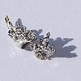

palladium

Definition: Palladium is a chemical element with the symbol Pd and atomic number 46. It is a rare and lustrous silvery-white metal discovered in 1803 by the English chemist William Hyde Wollaston. He named it after the asteroid Pallas, which was itself named after the epithet of the Greek goddess Athena, acquired by her when she slew Pallas. Palladium, platinum, rhodium, ruthenium, iridium and osmium form a group of elements referred to as the platinum group metals (PGMs). They have similar chemical properties, but palladium has the lowest melting point and is the least dense of them.
Source: Wikipedia
Wikipedia Page
Wikidata Page